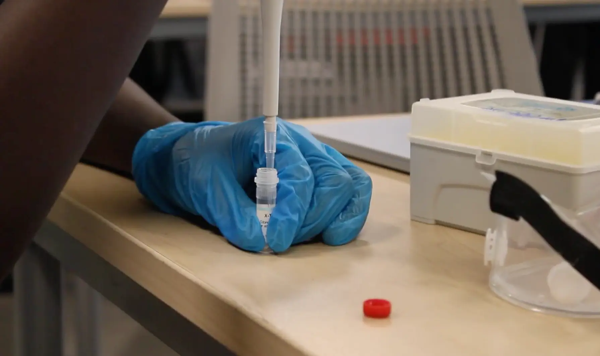

In my genetics experiment, “Biotech Breakthroughs” I learned a variety of things. The idea of the experiment was to compare our DNA to the DNA of our peers. During the experiment I learned about PCR, DNA extraction, how to manage Adobe Premier and how to create different types of cuts in my videos. In the beginning of our experiment I was taught about PCR and how it is used in the modern world. PCR stands for Polymerase Chain Reaction. It is a technique that makes millions of copies of a specific DNA segment from a sample. PCR is widely used for medicine, biology and forensic science. There are three basic steps to PCR: denaturation, annealing, and extension. In short, these steps change the temperature of DNA to make it susceptible to cloning. I was also taught the importance of DNA extraction in PCR. DNA extraction is the process of removing DNA from cells to study and test in labs. Without properly extracting DNA, using PCR as we did is impossible. Then, I learned how to use adobe premier pro to a high level; importing videos, overlapping audio, and creating J and L cuts. Overall, I learned many things in my genetics project that will help me have better understanding in modern day science.
In this experiment, not only did I learn about the typical aspects of genetics and how to compare them, but I also grew in my knowledge of the 21st century skill: Initiative, self-direction, and accountability. To understand my growth, it is important to understand the situation I was in at the time. It was the last couple of weeks before school ended, and I had to prove that I could manage my time in and out of school to complete a project to the best of my capabilities. Even more demanding was the fact that teammates are never perfect and can sometimes require maintenance to complete their own part of the project. The 21st century skill of initiative, self-direction, and accountability is reflected in this project because I learned to take accountability for my own learning while also aiding my teammates in their own understanding of the work given. Due to the timing that I had, I was disciplined enough to meet deadlines and be time-efficient, while also showcasing my mastery in the skill of setting high standards for myself and teammates. In essence, I can say with confidence that I showed mastery in my skills of initiative, self-direciton and accountability.

Back to Home Page